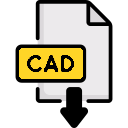

The Geoportfolio of Tudor Vuscan
S3723380
Hello! I have created this website to showcase my experience within the surveying industry and RMITs Bachelor of Surveying degree at the time of working in the Professional Practice course,
this includes examples of work that I have found most interesting as well as rewarding to create.
In the future, I would like to continue creating plans and deliverables in my career as highlighted here, to achieve this I’m also completing my fourth year of the BH116 Bachelor of Applied
Science (Surveying) (Honours) course. Outside of the course and work, I am an avid digital goods enthusiast, whether its games or movies, and a lover of the outdoors, I would like to think
these traits have contributed heavily to the affinity I have for the surveying industry.
Deliverables
Cartography
The two subjects which underpin most of the Surveying degree that I am completing have allowed me to create plans and maps which have tested my skills in a number of ways.
Cartography, for those unaware, is the process of creating maps for a specific purpose, translating spatial data into visual information that is easy to absorb, the first task that I have chosen to showcase is my final map.
This map allowed us to choose our own topic and create a map that informed the reader about the topic.
As shown on the map, this highlights the important battles and fluctuating state of political boundaries in the hilly, mountainous steppes in between 1800s Britain and Russia.
The process involved into making this map took a lot of research and study of historical sources, especially old maps which attributed land to the various political entities in this area.
Note: If map display is too small, right-click the image and 'Open in new tab' to allow zooming of the map.
Melbourne Map: Richmond Sporting District
Other than that, cartography also allowed us to engage into the mindset of a designer / architect, with the project being creating a new pathway for the Richmond oval area,
these occupations work adjacent to many geospatial occupations. Both projects were hand drawn into Adobe Illustrator.
Surveying
In Surveying (GEOM, an early project involved going to Yarra Bend and hand drawing a feature survey, this was a long-time consuming process involving many measurements and manual drawing,
giving insight on the conveniences of total stations and the post-field work processing that I’d be doing more of in the future.
LISCAD PLAN
Further along the way, in Engineering Surveying, there was a heavier mathematical / engineering element which had to be considered when setting out and
developing a path which could be built on RMITs Bundoora campus. The plan shows how our designed path’s elevations compared to the natural surface,
this visual diagram alongside data calculated in LISCAD lets us easily calculate our cut and fill volumes as well as where along the path this is necessary.
Note: If map display is too small, right-click the image and 'Open in new tab' to allow zooming of the map.
The Journey Thus Far
Peter Richards Surveying
Surveyors Assistant
November 2021 - Present [September 2023]
Throughout my studies, I have concurrently spent two years working casually at Peter Richards Surveying.
The experience so far has been eye opening in seeing how different the environments can be in which surveyors are needed, this has also confirmed my passion for geospatial work,
whether it comes from practical work or drafting. I chose to work at Peter Richards knowing that they dealt mainly with cadastral surveying,
which is the field of surveying that appeals to me the most. The work typically involves assisting party leaders, however there are days in which I am using GNSS receivers
to confirm an MGA rotation or AHD-adjusted heights for benchmarks, or days in which I am drafting plans that I have been on site for.
This has led to experience in operating both Topcon and Leica instruments in a set out capacity, as well as in a data recording sense for office work.
When applicable, these jobs tend to allow for drone work, setting and confirming pre-flight paths while adhering to CASA regulations.
In the office, AutoCAD is the program of choice, and depending on the job, contours or title dimensions are typically implemented into the final draft.
Qualifications and Proficiencies
|
CASA Operator Accreditation |
|
Victorian White Card |
|
Defensive Driving |
|
Adobe Suite |
|  |
AutoCAD / LISCAD |
|
Total Station Operation |
|
LASSI / SMES |
|
Remote Sensing |
Credits and Attributions
The following programming languages and software were used to create the website
- HTML
- CSS
- JavaScript
- Visual Studio Basic
The deliverables contains content from the following subjects:
- Cartography 2
- Surveying
- Engineering Surveying
Special thanks to the following people who have helped me make this website with their expertise and guidance:
Many of the icons used have been retouched by myself, however as per the policy of using the
Flaticons with a free account, the credits of the original creators of the
icons are listed below:
Attributions of icons used: